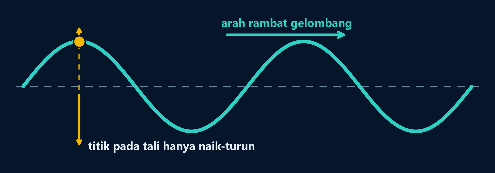
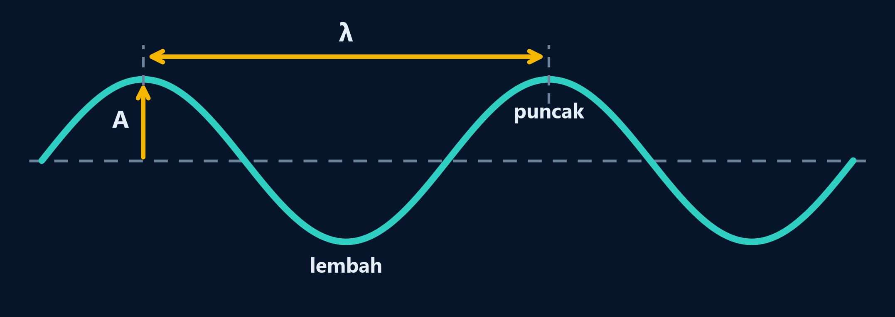
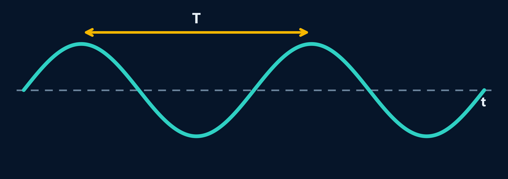
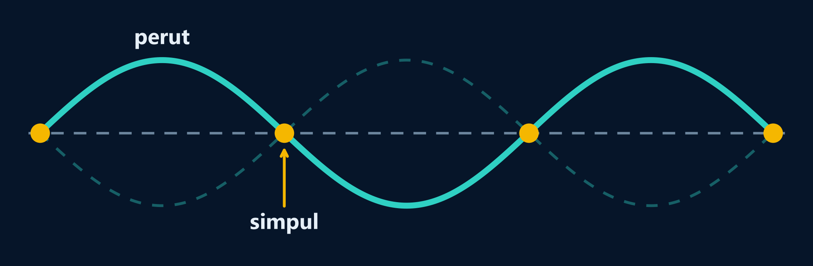

Pengertian gelombang
Gelombang adalah getaran (usikan) yang merambat dan membawa energi (tenaga) tanpa memindahkan materi medium secara keseluruhan. Pada gelombang mekanis, gangguan keseimbangan ini dirambatkan karena sifat kelentingan (elastisitas) medium.

Titik pada medium hanya bergetar naik-turun di sekitar posisi setimbangnya, tidak ikut berpindah bersama gelombang.
Jenis-jenis gelombang
Pilih kategori untuk melihat isinya.
| Jenis | Pengertian | Contoh |
|---|---|---|
| Mekanik | Memerlukan medium lenting untuk merambat. | Bunyi, gelombang tali, gelombang air. |
| Elektromagnetik | Dapat merambat tanpa medium, termasuk di ruang hampa. | Cahaya, gelombang radio, radar, sinar-X. |
| Jenis | Arah getar dan arah rambat | Contoh |
|---|---|---|
| Transversal | Getar tegak lurus arah rambat. Ciri: bukit (puncak) dan lembah. | Gelombang pada tali, permukaan air, cahaya. |
| Longitudinal | Getar searah (sejajar) arah rambat. Ciri: rapatan dan renggangan. | Gelombang bunyi, gelombang pada pegas (slinki). |
Gelombang berjalan
Getaran yang merambat sepanjang medium dengan amplitudo tetap di setiap titik (pada model ideal tanpa redaman).
Gelombang stasioner (gelombang diam / berdiri)
Hasil interferensi (perpaduan) antara gelombang datang dan gelombang pantul yang memiliki amplitudo serta frekuensi sama tetapi merambat berlawanan arah, menghasilkan titik simpul dan perut.
Besaran-besaran gelombang

| Besaran | Simbol | Pengertian | Satuan |
|---|---|---|---|
| Simpangan | y | Jarak bertanda suatu titik dari posisi setimbang. | m (atau cm) |
| Amplitudo | A | Besar simpangan maksimum di titik asal getaran. | m (atau cm) |
| Periode | T | Waktu untuk menempuh satu panjang gelombang (1 getaran). | s |
| Frekuensi | f | Banyaknya getaran setiap sekon. | Hz |
| Panjang gelombang | λ | Jarak yang ditempuh getaran dalam satu periode. | m |
| Cepat rambat | v | Jarak yang ditempuh gelombang setiap sekon. | m/s |
Periode dan frekuensi
T = t / n f = n / t = 1 / Tn = jumlah gelombang/getaran, t = waktu total
Panjang gelombang & Cepat rambat
λ = v · T = v / f v = λ · f = λ / TJika panjang total L memuat n gelombang: λ = L / n
Cara menentukan satu panjang gelombang (1 λ)
Transversal
- Puncak ke puncak berikutnya (1 bukit + 1 lembah lengkap = 1 λ).
- Lembah ke lembah berikutnya.
- Jarak puncak ke lembah terdekat = ½ λ.
- Contoh kasus gabus: jika gabus 1 di puncak, gabus 2 di lembah, dan di antaranya ada 1 bukit penuh, maka jarak keduanya adalah 1,5 λ.
Longitudinal
- Pusat rapatan ke pusat rapatan berikutnya = 1 λ.
- Pusat renggangan ke pusat renggangan berikutnya = 1 λ.
- Satu rapatan + satu renggangan = 1 λ.
Membaca grafik gelombang
Menunjukkan bentuk gelombang pada suatu saat. Jarak mendatar antara dua puncak berurutan adalah λ; jarak vertikal dari posisi setimbang ke puncak adalah A.

Menunjukkan getaran satu titik selama selang waktu tertentu. Selang waktu antara dua puncak berurutan adalah T; jarak vertikal dari posisi setimbang ke puncak adalah A.
Kunci: sumbu posisi (x) → cari λ; sumbu waktu (t) → cari T.
Persamaan gelombang berjalan
Asal-usul persamaan (titik asal P ke titik Q)
Jika titik asal P telah bergetar selama t sekon, maka titik Q yang berjarak x dari P baru bergetar selama (t − x/v) sekon:
yP = A sin(ωt) = A sin(2πt / T) = A sin(2πft) = A sin(2πφ) yQ = A sin[ (2π / T)(t − x / v) ] = A sin[ 2π(t / T − x / λ) ]Bentuk umum persamaan gelombang berjalan
y = ±A sin(ωt ± kx) = ±A sin 2π(t / T ± x / λ)| Simbol | Arti | Rumus / Satuan |
|---|---|---|
| y | simpangan getaran di titik P/Q | m atau cm |
| A | amplitudo getaran di titik asal | m atau cm |
| ω | frekuensi sudut | ω = 2πf = 2π/T (rad/s) |
| k | bilangan gelombang | k = 2π/λ (m⁻¹ atau rad/m) |
| t | lama titik asal telah bergetar | sekon (s) |
| x | jarak titik dari titik asal getaran | m atau cm |
| v | cepat rambat gelombang | v = ω / k = λ · f |
Aturan tanda Amplitudo (±A)
+A → permulaan getar ke atas −A → permulaan getar ke bawahMenunjukkan arah gerak awal sumber getaran saat t = 0.
Aturan tanda Arah Rambat (±kx)
−kx atau −x/λ → merambat ke kanan (x+) +kx atau +x/λ → merambat ke kiri (x−)Beda tanda antara ωt dan kx berarti merambat ke kanan.
Contoh Modul: y = 0,04 sin 0,04π(60t − x) (x, y dalam cm, t dalam s)
Masukkan 0,04π ke dalam kurung lalu ubah ke bentuk y = A sin 2π(ft − x/λ):
y = 0,04 sin 2π(1,2t − x / 50)- a. Amplitudo (A): 0,04 cm (permulaan getar ke atas karena +A)
- b. Frekuensi (f): dari suku ft = 1,2t diperoleh f = 1,2 Hz
- c. Panjang gelombang (λ): dari suku x/λ = x/50 diperoleh λ = 50 cm
- d. Cepat rambat (v): v = λ · f = 50 × 1,2 = 60 cm/s (merambat ke kanan)
- e. Simpangan saat t = 1 s dan x = 22,5 cm:
y = 0,04 sin 2π(1,2(1) − 22,5/50) = 0,04 sin 2π(37,5/50) = 0,04 sin 2π(3/4) = 0,04 sin 270° = −0,04 cm.
Simulasi Gelombang Berjalan
Fase gelombang (φ) & Beda fase (Δφ)
Fase gelombang menunjukkan keadaan getaran suatu titik. Hubungan simpangan, sudut fase (θ), dan fase (φ):
y = ±A sin(2πφ), dengan φ = (t / T ± x / λ) = θ / 2πBeda fase (Δφ) antara dua titik A dan B
ΔφAB = φB − φA = Δx / λ (pada saat t yang sama) Δφ = Δt / T (pada satu titik untuk selang waktu Δt)| Kondisi | Selisih jarak (Δx) | Beda fase (Δφ) | Selisih sudut fase (Δθ) |
|---|---|---|---|
| Sefase | 0, λ, 2λ, 3λ, … | 0, 1, 2, 3, … (bilangan bulat) | 0, 2π, 4π, … |
| Berlawanan fase | ½λ, 1½λ, 2½λ, … | ½, 1½, 2½, … | π, 3π, 5π, … |
Menentukan fase titik A di posisi setimbang (kasus soal modul)
Jika diketahui titik A sedang berada di titik setimbang (yA = 0), nilai fase awal φA bergantung pada arah getar A dan permulaan getar sumber:
- Permulaan getar ke atas (+A):
- Titik A di titik setimbang bergerak ke bawah → φA = 0, 1, 2, …
- Titik A di titik setimbang bergerak ke atas → φA = ½, 3/2, 5/2, …
- Permulaan getar ke bawah (−A):
- Titik A di titik setimbang bergerak ke atas → φA = 0, 1, 2, …
- Titik A di titik setimbang bergerak ke bawah → φA = ½, 3/2, 5/2, …
- Setelah mendapatkan φB = φA + ΔφAB, hitung simpangan di B dengan yB = ±A sin(2πφB).
Cepat rambat dan kecepatan getar
Cepat rambat gelombang (v)
Kecepatan pola gelombang merambat sepanjang medium (konstan pada medium seragam).
v = λ · f = ω / kKecepatan getar partikel (vy)
Turunan pertama simpangan y terhadap waktu t:
vy = dy/dt = Aω cos(ωt − kx)- Di posisi setimbang (y = 0): kecepatan getar maksimum, percepatan nol.
- Di simpangan maksimum (y = ±A): kecepatan getar nol, percepatan maksimum.
Sifat-sifat umum gelombang
Arahkan kursor atau ketuk kartu untuk membaliknya.
Fase pantulan pada tali (Ujung Bebas vs Ujung Terikat)
- Ujung bebas: gelombang pantul sefase dengan gelombang datang (Δφ = 0; puncak dipantulkan tetap sebagai puncak).
- Ujung tetap (terikat): gelombang pantul berlawanan fase dengan gelombang datang (Δφ = ½ atau beda sudut fase π; puncak dipantulkan menjadi lembah).
Persamaan gelombang stasioner (gelombang diam)
Terbentuk dari superposisi gelombang datang (y₁) dan gelombang pantul (y₂): yC = yC1 + yC2. Penting: dalam persamaan gelombang stasioner, x diukur dari titik pantul (ujung bebas / ujung terikat), sedangkan L adalah panjang seluruh tali dari sumber getar ke ujung pantul.

Simpul (S): titik dengan amplitudo nol (diam). Perut (P): titik dengan amplitudo maksimum (2A).
1. Pantulan Ujung Bebas
Di ujung pantul (x = 0) terbentuk Perut (Δφ = 0).
y = 2A cos(kx) sin(ωt − kL) y = 2A cos(2πx / λ) sin 2π(t / T − L / λ)Amplitudo stasioner (AC):
AC = 2A cos(kx) = 2A cos(2πx / λ)Letak Simpul & Perut dari ujung bebas:
Simpul ke-n: x = (2n − 1) · λ / 4 Perut ke-n: x = (n − 1) · λ / 2dengan n = 1, 2, 3, … (bilangan asli) → urutan ke-1, ke-2, ke-3, dst.
2. Pantulan Ujung Tetap (Terikat)
Di ujung pantul (x = 0) terbentuk Simpul (Δφ = ½).
y = 2A sin(kx) cos(ωt − kL) y = 2A sin(2πx / λ) cos 2π(t / T − L / λ)Amplitudo stasioner (AP):
AP = 2A sin(kx) = 2A sin(2πx / λ)Letak Simpul & Perut dari ujung terikat:
Simpul ke-n: x = (n − 1) · λ / 2 Perut ke-n: x = (2n − 1) · λ / 4dengan n = 1, 2, 3, … (bilangan asli) → urutan ke-1, ke-2, ke-3, dst.
Cara cepat membedakan persamaan Ujung Bebas vs Ujung Terikat
- Lihat pasangan fungsi trigonometri pada variabel posisi x:
- Jika cos(kx) (dan sin(ωt)) → Ujung Bebas (karena saat x = 0, cos 0 = 1 → maksimum/perut).
- Jika sin(kx) (dan cos(ωt)) → Ujung Terikat (karena saat x = 0, sin 0 = 0 → simpul).
- Konversi jarak terhadap sumber getar vs ujung pantul:
Jika panjang tali adalah L dan posisi titik dihitung dari sumber getar sejauh xasal, maka jarak titik tersebut dari ujung pantul adalah: x = L − xasal ↔ xasal = L − x
| Dua titik berdekatan | Jarak |
|---|---|
| Simpul ke simpul terdekat | ½ λ |
| Perut ke perut terdekat | ½ λ |
| Simpul ke perut terdekat | ¼ λ |
Kapan pakai rumus Gelombang Berjalan vs Stasioner pada tali sepanjang L?
Misalkan tali AB memiliki panjang L, cepat rambat v, dan titik P berjarak xasal dari A (atau berjarak x = L − xasal dari ujung pantul B). Setelah sumber A bergetar selama t sekon, gelombang telah menempuh jarak S = v · t:
- 1) Jika S < xasal: Gelombang datang belum sampai di titik P → simpangan yP = 0.
- 2) Jika xasal ≤ S < (L + x): Titik P baru dilewati gelombang datang tetapi belum dilewati gelombang pantul → gunakan persamaan gelombang berjalan: yP = A sin 2π(ft − xasal/λ).
- 3) Jika S ≥ (L + x): Titik P sudah dilewati gelombang datang maupun gelombang pantul → terjadi superposisi, gunakan persamaan gelombang stasioner!
Contoh Soal Modul: y = 0,5 cos(5πx) sin(4πt) (x, y dalam m, t dalam s)
- Karena variabel x berada di dalam fungsi cos(5πx), maka ini adalah gelombang stasioner ujung bebas.
- Amplitudo gelombang stasioner maksimum: 2A = 0,5 m → amplitudo gelombang datang A = 0,25 m.
- Bilangan gelombang: k = 5π → 2π / λ = 5π → λ = 2/5 = 0,4 m.
- Frekuensi sudut: ω = 4π → 2πf = 4π → f = 2 Hz, sehingga v = λ · f = 0,8 m/s.
- Letak simpul ke-3 (n = 3) dari ujung pantul (ujung bebas):
x = (2n − 1) · λ / 4 = (2(3) − 1) × (0,4 / 4) = 5 × 0,1 = 0,5 m.
Simulasi Gelombang Stasioner
Gelombang pada tali (Percobaan Melde)
F = tegangan tali (N), μ = massa per satuan panjang tali (kg/m), m = massa tali (kg), L = panjang tali (m)
- Cepat rambat sebanding dengan akar tegangan tali (v ∝ √F): jika tegangan diperbesar menjadi 4F, maka cepat rambat menjadi √4 = 2v.
- Ingat konversi ke satuan SI saat menghitung: gram → kg (× 10⁻³).
Dawai / Senar (Kedua ujung terikat)
fn = n · v / (2L), n = 1, 2, 3, …- Nada dasar (n = 1): f₁ = v / (2L) → L = ½ λ
- Nada atas pertama (n = 2): f₂ = 2f₁ → L = 1 λ
- Jika pada dawai sepanjang L terbentuk k buah gelombang berdiri penuh, maka λ = L / k dan v = λ · f.
Energi gelombang
Untuk gelombang harmonik dengan medium dan frekuensi tetap:
E ∝ A²Amplitudo 2× → energi 4×.
Intensitas
I = P / SI (W/m²), P daya (W), S luas permukaan (m²)
Rumus wajib
Konsep utama
- Gelombang memindahkan energi; partikel medium hanya bergetar di sekitar posisi setimbang.
- Gelombang berjalan memiliki amplitudo konstan A; gelombang stasioner memiliki amplitudo bergantung posisi x dengan nilai maksimum di perut sebesar 2A.
- Ujung bebas: y = 2A cos(kx) sin(ωt − kL) → x = 0 adalah Perut.
- Ujung terikat: y = 2A sin(kx) cos(ωt − kL) → x = 0 adalah Simpul.
- Jarak simpul ke perut terdekat adalah ¼ λ; jarak sesama simpul atau sesama perut terdekat adalah ½ λ.
Kuis cepat (Latihan Modul)
Pilih satu jawaban untuk langsung mengecek.
Benar! Simpul ke simpul terdekat λ/2, sedangkan simpul ke perut terdekat λ/4.
Belum tepat. Coba pilihan lain.
Benar! v = ω / k = 2π / (0,1π) = 20 m/s (dengan f = 1 Hz dan λ = 20 m).
Belum tepat. Gunakan v = ω / k = 2π / 0,1π.
Benar! Karena cos(5πx) adalah ujung bebas dan λ = 2π/5π = 0,4 m, maka x = (2n − 1)λ/4 = 5 × 0,1 = 0,5 m.
Belum tepat. Cari λ dari k = 5π lalu gunakan rumus simpul ujung bebas x = (2n − 1)λ/4.
Benar! Menurut Hukum Melde v ∝ √F, sehingga √4 = 2v.
Belum tepat. Ingat cepat rambat sebanding dengan akar tegangan tali (v ∝ √F).